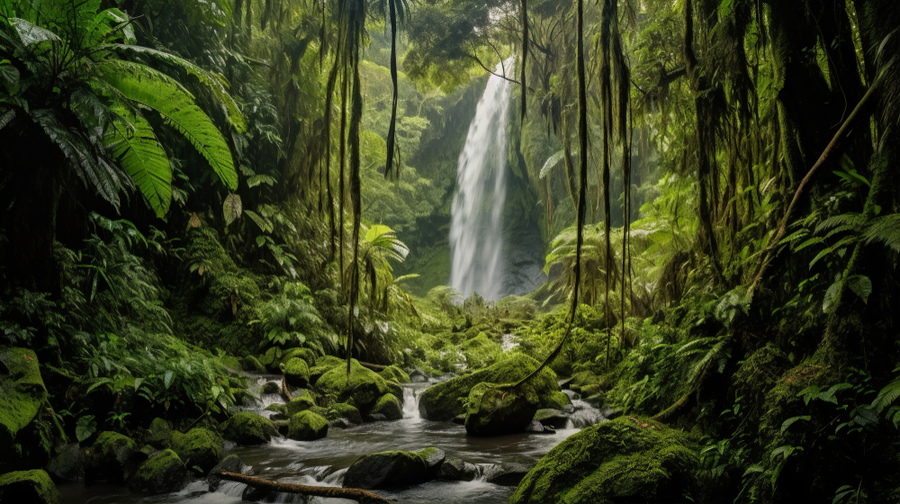
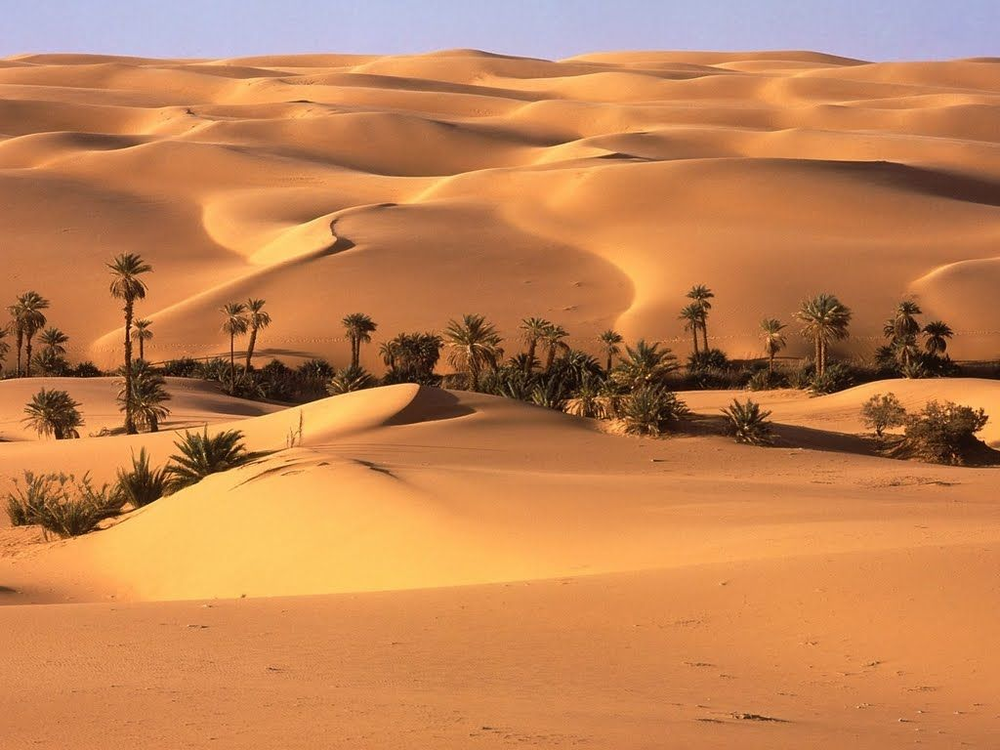
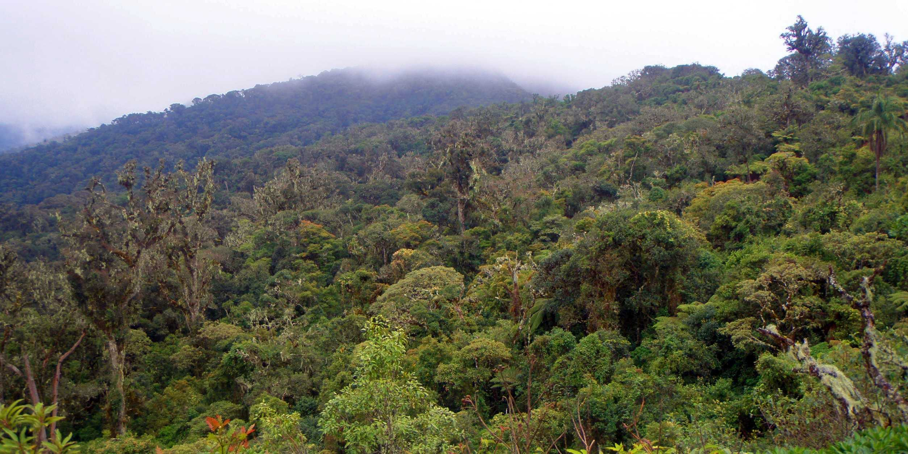
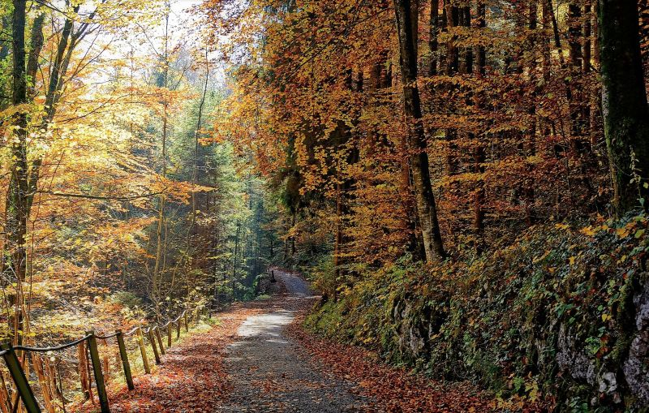
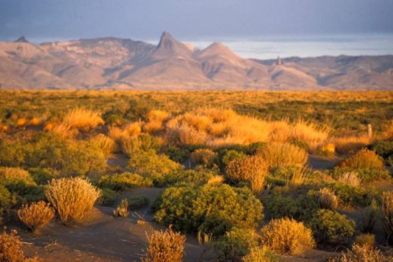
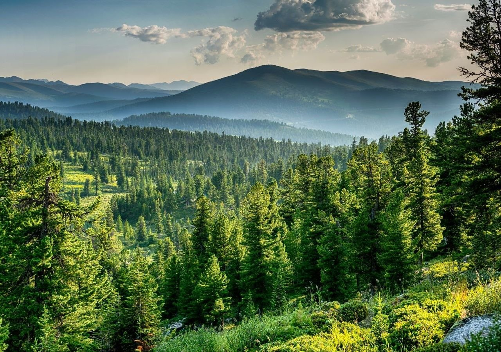
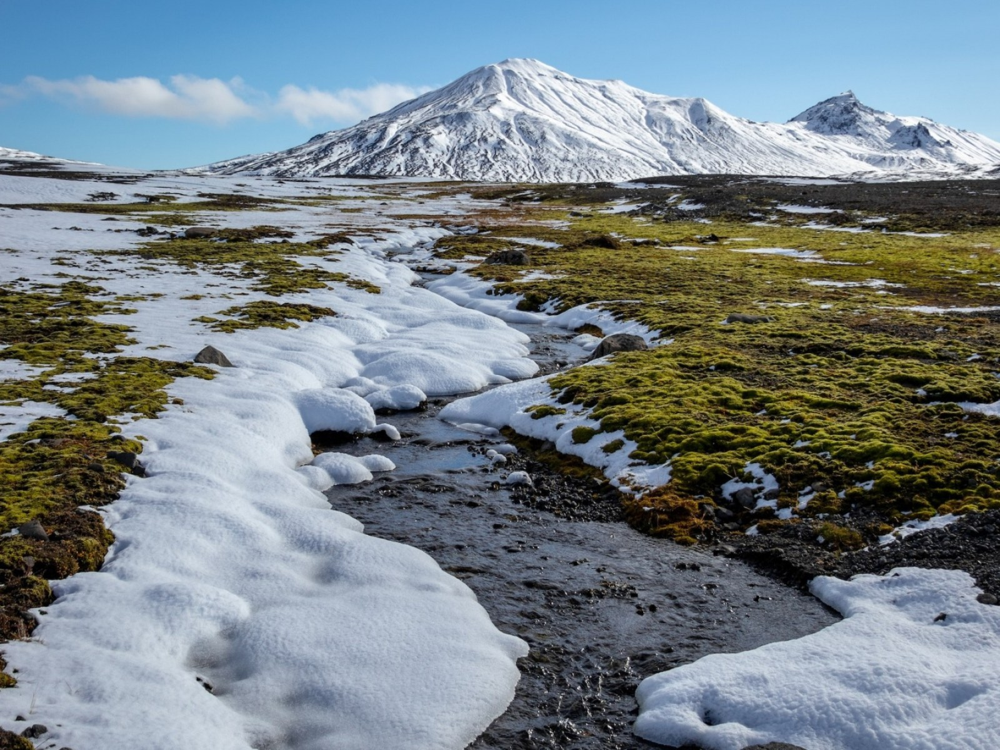

🌳 1. Selvas tropicales
Características:
Alta biodiversidad (plantas, animales, hongos, microorganismos).
Clima cálido y húmedo durante todo el año.
Lluvias abundantes (más de 2000 mm anuales).
Suelos pobres en nutrientes debido a la rápida descomposición de materia orgánica.
Geografía:
Ubicadas cerca del ecuador.
Ejemplos: Amazonía (Sudamérica), Cuenca del Congo (África), Sudeste Asiático.

🌾 2. Sabanas
Características:
Alternancia de estación seca y lluviosa.
Vegetación de pastos altos con algunos árboles dispersos.
Presencia de grandes herbívoros (jirafas, cebras, antílopes).
Geografía:
Regiones tropicales y subtropicales.
Predominan en África (sabana africana), partes de América del Sur (Llanos, Cerrado) y Australia.

☀️ 3. Desiertos cálidos
Características:
Muy baja precipitación (menos de 250 mm/año).
Temperaturas extremas (muy calientes durante el día y frías por la noche).
Vegetación escasa y adaptada a la sequía (cactus, arbustos espinosos).
Geografía:
Latitudes subtropicales, entre 20° y 30°.
Ejemplos: Sahara (África), Atacama (Chile), Sonora (México/EE. UU.), desierto de Arabia.

🌿 4. Bosques mediterráneos
Características:
Clima con inviernos suaves y lluviosos, veranos calurosos y secos.
Vegetación de arbustos y árboles perennes resistentes a la sequía.
Alta biodiversidad vegetal adaptada al fuego.
Geografía:
Cuencas mediterráneas (sur de Europa y norte de África), California, centro de Chile, sur de Australia, suroeste de Sudáfrica.

🍂 5. Bosques caducifolios (templados)
Características:
Árboles que pierden sus hojas en otoño.
Cuatro estaciones bien marcadas.
Suelos ricos en nutrientes y biodiversidad moderada.
Geografía:
Regiones templadas de América del Norte, Europa, Asia oriental (China, Japón, Corea).

🌾 6. Estepas
Características:
Lluvias escasas, pero más que en los desiertos.
Vegetación de gramíneas (sin árboles).
Grandes contrastes térmicos entre estaciones.
Geografía:
Regiones templadas interiores.
Ejemplos: estepa euroasiática (Rusia, Mongolia), las Pampas (Argentina), las Grandes Llanuras (EE. UU.).

🌲 7. Taiga (bosque boreal)
Características:
Bosques de coníferas (pinos, abetos, cedros).
Invierno largo y frío; verano corto y fresco.
Suelos ácidos y poco fértiles.
Geografía:
Latitudes altas del hemisferio norte.
Canadá, Alaska, Escandinavia, Rusia (Siberia).

❄️ 8. Tundra
Características:
Vegetación baja (líquenes, musgos, arbustos).
Suelo permanentemente congelado (permafrost).
Invierno largo y extremo; corto verano.
Geografía:
Cercana a los polos (ártico y antártico).
Norte de Canadá, Groenlandia, Rusia, Alaska, algunas partes del Ártico.
